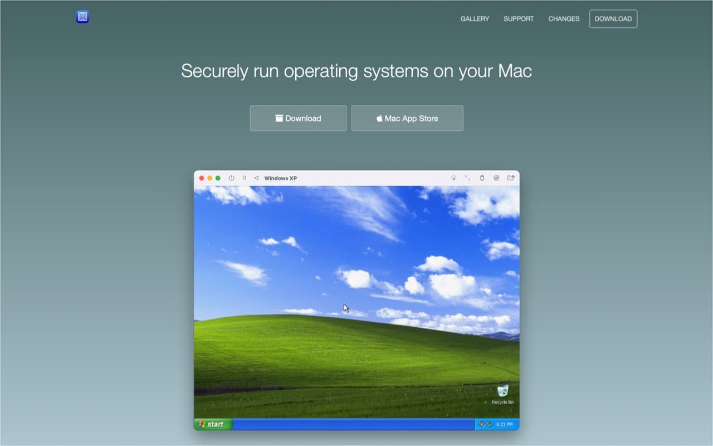
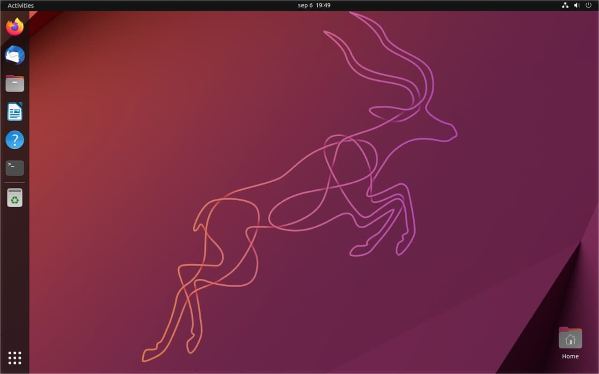
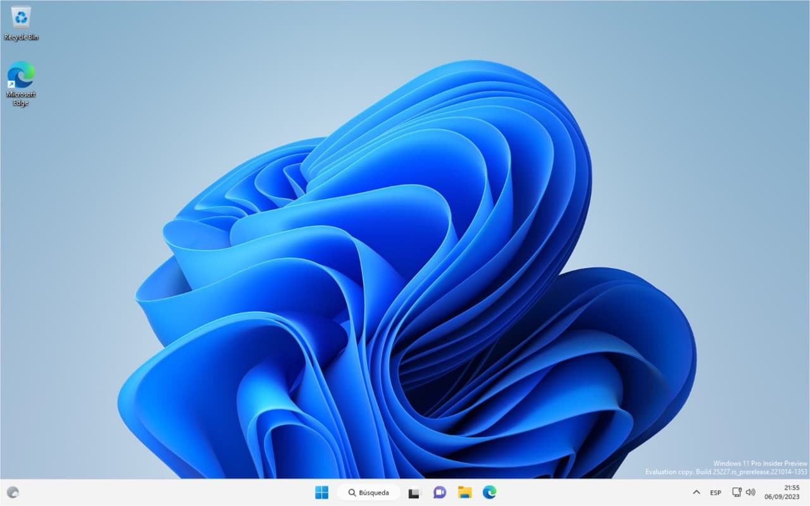

DEEP MAC M1
MACBOOK M1
Evaluación el MacBook M1, Dec 12, 2022

¿ Merece la pena comprar un MacBook M1 para estudiar ?
UTM
UTM un nueva máquina Virtual, Jun 25, 2023
Analizaremos en profundidad la máquina virtual UTM basado en Quemu
Sistemas Operativos
Sistemas Oprativos para UTM, 1 July 2023

Busqueda de Sistemas Operativos para UTM y otras Máquinas Virtuales.
Instalando Ubuntu ARM Server
Instalando Ubuntu ARM Server con UTM, 25 July 2023
Instalación de Ubuntu ARM Server en máquina virtual UTM
Instalando Windows 11 ARM
Instalando Windows 11 ARM con UTM, 3 September 2023
Instalación de Windows 11 ARM en máquina virtual UTM
Jorge Camacho

Estudiante Desarrollador de Aplicaciones Web
C.I.P. Estella
Últimas actulizaciones en el Blog
...